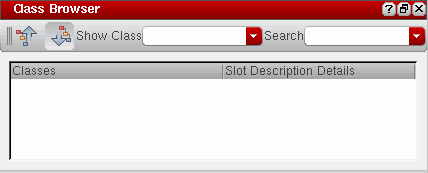
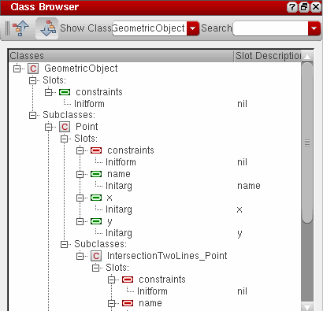

Class Inheritance Relationships
You can use the Class Browser to understand and follow the class inheritance hierarchy of the classes used in your SKILL code. You have the option to view the subclasses, slot definitions, and superclasses of a class.
Any @reader, @writer, @initarg, and @initform slot options you used for initializing the slots can also be viewed in the Class Browser assistant. All instances of a given class will have the same slots. If a subclass is inherited from a superclass, it also inherits the slots of the superclass. For more information on class inheritance concepts, see
Displaying the Class Hierarchy
-
Choose Window – Assistants – Class Browser. The Class Browser assistant displays.
 - In the Show Class drop-down list box, type the class name for which you want to view the class hierarchy and press Enter. If the specified class does not exists, an error message is displayed.
-
Click
to view the superclasses or
to view the subclasses and slot definitions of the given class. If the superclass or subclass information exists, it is displayed as an inheritance tree in the Class Browser window.
Different object types are identified by different icons in the class tree. For example, classes are identified by the icon, slots defined within a given class are identified by the icon, and slots inherited from a superclass are identified by the icon.- Right-click a class name in the current tree view and choose Go To Source from the context-menu to view its definition in the code. If the code file for the given class is not loaded, a warning message displays instead.
- Right-click a class name and choose Go To Finder from the context-menu to view its syntax and description in Finder.
-
Use the Search drop-down list box to search for class or slot names within the current tree view. Alternatively, view the class hierarchy using the Search toolbar, as described below:
- In the Search toolbar, choose Show Class from the first drop-down list box.
-
In the second drop-down list box, type the class name for which you want to view the class hierarchy and press Enter or click the
 icon.
icon.
If the class information exists, it is displayed as an inheritance tree in the Class Browser window.
Related Topics
Using the Method Browser Assistant
Setting Up Files/Directories for the Lint Checker
Using the Step Result Assistant
Using the Code Browser Assistant
Return to top